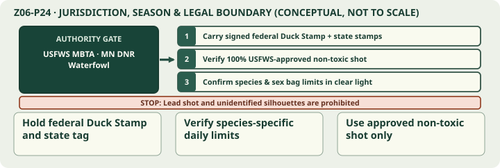

Z06-P24 · Hunting and fishing · New manuscript
Migratory Waterfowl Ecology and Federal Stamp/Shot Rules
Comply with dual federal-state waterfowl frameworks, positive duck-species ID, and mandatory non-toxic shot regulations.
When it applies · Wetlands, marshes, lakes, and river flyways during lawful waterfowl seasons.
Equipment · State license + federal Duck Stamp + HIP certification, non-toxic shot only, binoculars, USCG PFD.

Actions
- Hold both current Minnesota licenses/stamps and a signed federal Migratory Bird Hunting and Conservation Stamp (Duck Stamp) plus HIP registration before hunting waterfowl.[H02, H14, H18]
- Use only USFWS-approved non-toxic shot—never lead shot—to prevent lethal lead poisoning in waterfowl and scavenging bald eagles.[H14, H18]
- Confirm positive duck species and sex identification on the wing because daily bag limits vary strictly by species (such as canvasback, pintail, wood duck, and hen mallards).[H02, H14, H18]
Failure recognition · Carrying lead shells in a wetland blind or shooting unidentified silhouettes in dim dawn light violates federal law and poisons eagles.[H14, H18]
Verify · Federal Duck Stamp, non-toxic shells, legal shooting light, and species bag limits are confirmed before afield travel.[H14, H18]
Stop or change course · Stop shooting when dim light, fog, or distance prevents positive waterfowl species identification or safe boat stability.[H03, H14, H18]
Evidence and editorial notes
- H02 · Minnesota DNR · Minnesota Hunting and Trapping Regulations (Current web edition)
- Section: Hunting licenses, zones, seasons, and legal methods · Conditions: Minnesota big game, small game, and bird hunting
Support: Hunters must verify current license, permit-area, season, legal-hours, blaze-clothing, and method rules with the governing authority prior to afield activity.
Limitations: Private-land trespass law, municipal ordinances, and tribal jurisdiction apply separately; emergencies do not suspend wildlife law. · Conflicting evidence: None noted.
Editorial note: Establishes Z06 hunting authority gate. · Specialist reviewer: Minnesota DNR wildlife law reviewer
Primary source · checked 2026-11-25
Current assessment · A04-H02 (2026-11-25) · Bounded support confirmed (A04): DNR publishes the applicable checks and updates. No season date, license decision or exception is approved by this record. Limits: Specialist review PENDING (Minnesota DNR wildlife law reviewer); publication HOLD. All release decisions pending. - H03 · Minnesota DNR · Firearms Safety Certification and Hunter Education (Current web edition)
- Section: Four fundamental firearm safety rules and certification · Conditions: Any firearm handling, transport, or field carry
Support: Treat every firearm as loaded, keep the muzzle in a safe direction, keep finger off the trigger until ready to shoot, and verify target and what is beyond it.
Limitations: Certification is required by age/statute in Minnesota; written summaries never substitute for formal certified safety instruction. · Conflicting evidence: None noted.
Editorial note: Mandatory Z06 bounded weapon-safety gate. · Specialist reviewer: Certified hunter-education and firearm safety instructor
Primary source · checked 2026-11-25
Current assessment · A04-H03 (2026-11-25) · Bounded support confirmed from an alternate source (A04): Basic safe handling principles only. No firing instruction, exercise or equipment qualification. Limits: Specialist review PENDING (Certified hunter-education and firearm safety instructor); publication HOLD. All release decisions pending. - H14 · U.S. Fish & Wildlife Service · Migratory Bird Treaty Act Protections (Current web edition)
- Section: Migratory Bird Treaty Act federal protections · Conditions: All native migratory birds, nests, feathers, and eggs
Support: Federal law prohibits taking, possessing, or disturbing protected migratory birds, nests, or eggs outside regulated hunting seasons and federal permits.
Limitations: Waterfowl hunting requires both state licenses and a federal Duck Stamp plus non-toxic shot rules. · Conflicting evidence: None noted.
Editorial note: Enforces federal migratory bird law. · Specialist reviewer: USFWS and wildlife legal reviewer
Primary source · checked 2026-11-25 - H18 · Minnesota DNR · Waterfowl Hunting and Federal Migratory Bird Rules (Current web edition)
- Section: Waterfowl cold-water capsizing and non-toxic shot compliance · Conditions: Wetland and open-water fall waterfowl environments
Support: Cold-water immersion, overloaded boats, and wading drop-offs cause severe fatalities; wear flotation, check forecasts, and verify federal non-toxic shot and species limits.
Limitations: Emergencies and weather shifts override harvest goals; stay ashore in high wind or unverified ice. · Conflicting evidence: None noted.
Editorial note: Reconciles B013 P15-P16 with Z06 water/ice limits. · Specialist reviewer: Water-safety and wildlife reviewer
Primary source · checked 2026-11-25
Source lineage · New manuscript (Z06 P17 federal and state law) · Classification · New manuscript.